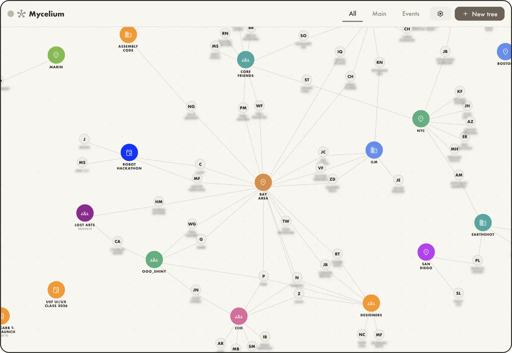

Mycelium
V.0.1
This is one of my favorite tools to date. Making it forced me to reflect, to remember friends that I haven’t talked to in ages, and to confront the utter mess that my iCloud contacts list has become. This exactly fits my intentions for this project as a whole.
Seeing people in a spatial map makes a lot more sense to me than an alphabetical list. I’m motivated to add differientiated connections for people’s partners, and then their children. I’m pondering adding people’s birthdays, and whether I might be able to import that from Facebook. And whom do I have mailing addresses for if I sent out holiday cards?
It feels like a garden to tend, instead of a list to scroll.